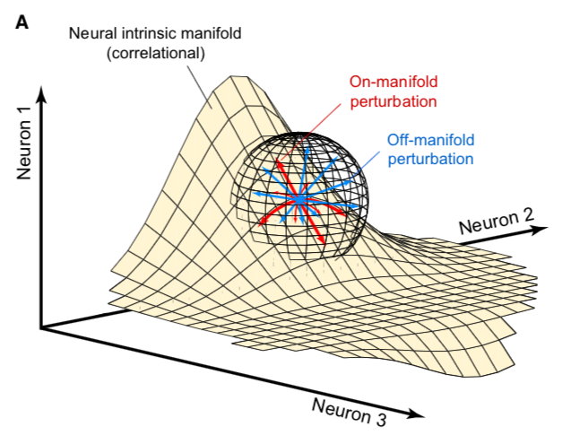
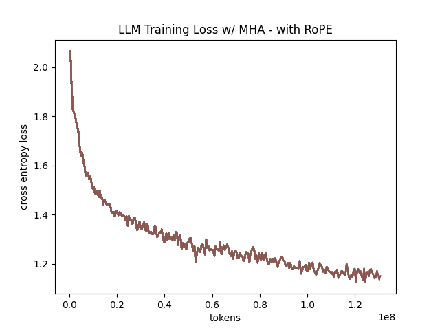
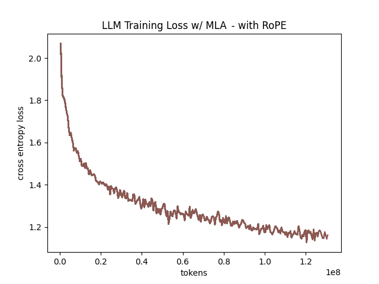
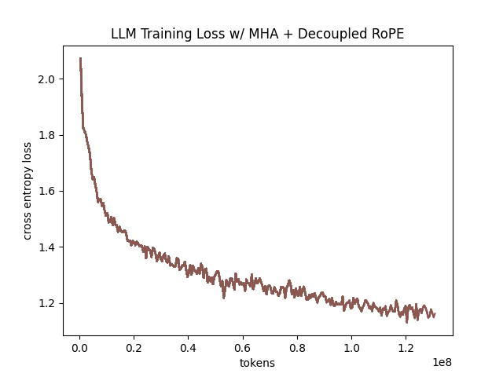
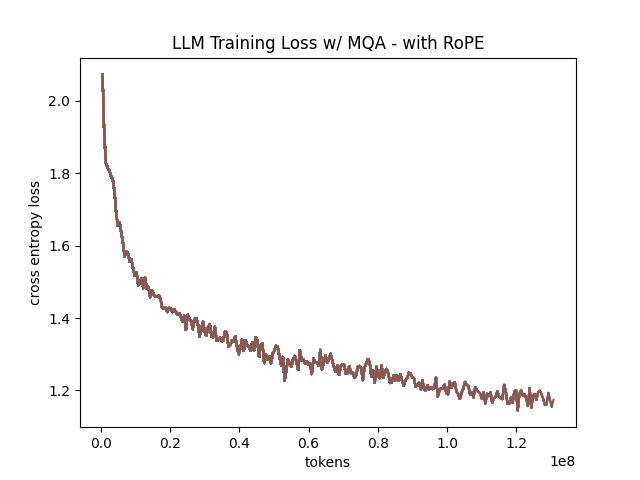
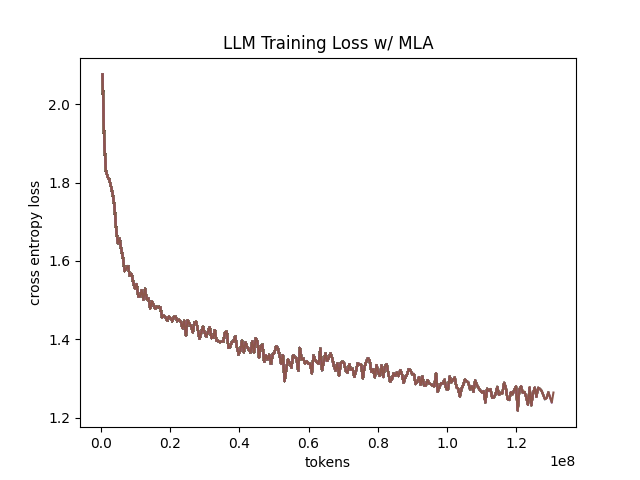
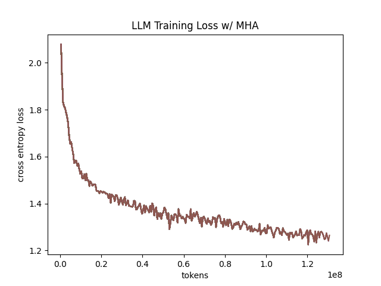
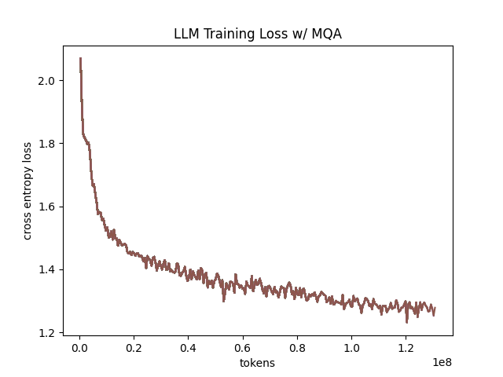
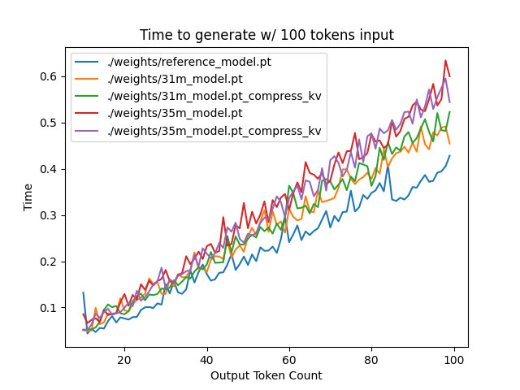
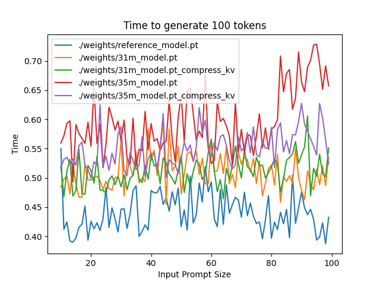

On MLA
Table of Contents
Understanding Multi-Head Latent Attention
Multi-head Latent Attention (MLA) is a variant of multi-head attention which was introduced in the DeepSeek-V2 paper1. There are several variants of multi-head attention whose purpose is primarily to reduce the KV-cache size, which is a memory bottleneck that emerges from scaling large models. These methods, which include Group-Query Attention and Multi-Query Attention, are primarily considered performance tradeoffs, i.e. the performance is worse, but you get to scale them much further by reducing the memory overhead.
In comparison, MLA accomplishes this by using a low-rank factorized projection matrix, operating a bit like multi-query attention where instead of repeating a single head several times, you decompress a latent vector to yield a unique, appropriate corresponding K and V head for each Q head. DeepSeek claims this not only helps the memory overhead, but also improves the model rather than suffering for its inclusion. The basic idea is as follows:
- Replace the QKV computation by using low rank factorization to turn one matrix of dim \((in, out)\) to two matrices of \((in, rank)\) and \((rank, out)\)
- Project the compressed KV latent vector for each head to get the full K and V head corresponding to each Q head.
- Cache the compressed latent KV vector instead of each of the KV heads, and compute the KV heads on the fly from the latent vector.
There is also an additional component of MLA which outlines decoupled RoPE. In this component, they make MLA compatible with RoPE by extracting two types of "sub-heads" for Q and K from the compressed latent vectors: one which will not contain position encoding information, and one whose purpose is to carry RoPE. They stitch these "sub-heads" together to create full-sized heads, allowing a finer degree of control over how much of each head is responsible for position encoding information. For simplicity's sake, we start with a version which only uses the low-rank factorization, and then add this decoupled RoPE back in later. Code for this project can be found on github.
Why Low-Rank Factorization?
Using two matrices instead of one, in theory, has some tradeoffs. The practice of factorizing a matrix (in this case the Q and KV matrices) into a product of matrices (in this case the compression and decompression matrices) is called matrix decomposition. The case here, where we are decomposing a matrix \((a, b)\) into two matrices \((a, r)\), \((r, b)\), is called rank factorization. A matrix of any shape can be decomposed into two matrices this way, but the lower the value of \(r\) the smaller the space of possible matrices that can be perfectly reconstructed2.
When using low-rank factorization for layers in a neural network, the good things are that the compressed matrices use fewer parameters3, and are somewhat more expressive (by virtue of having two layers sometimes separated by a nonlinearity like a layernorm or activation). They can end up roughly approximate or equivalent to one larger matrix, so in theory you could multiply the weights of these matrices together to retrieve an approximation of your original matrix.
The weaknesses of doing this are that we now have to perform 2 operations for every time we use this (i.e. we double the total matmuls for each layer we compress and decompress, in exchange for making them small), and will obviously lose some of the original representation power of the original matrix, via limiting them to only possibly being rank \(r\) or lower. You can think of low-rank decomposition as trading memory costs for computation costs – variants of this are popular for things like finetuning and here for kv-cache reduction, since those things are gated by total memory cost rather than computational overhead or inference speed.
In our case, we are hoping that we can preserve the functionality of \(W_{qkv}\) as much as possible while reducing the size of the cache by as much as we can. This should, in theory, allow us to enjoy the performance of normal multi-head attention while keeping the kv cache overhead minimal.
Aside: Perturbations in Low-Rank Decomposition
When we apply gradient updates to these decomposed matrices, it's mathematically a little different from perturbing the full size matrix. Specifically, when you apply a gradient update perturbation to the decomposed matrix, their composition will remain of rank \(r\) no matter what – you are only able to travel from rank \(r\) matrix to rank \(r\) matrix, and this is immutable because of the shape of the matrices. This contrasts with a regular, non-decomposed matrix, where our perturbation can move us in any direction, even if that increases the rank. To be a little more precise, if you have a rank \(r\) \((n, n)\) matrix, and you assume a uniform distribution of possible perturbation directions, applying a randomly sampled perturbation will turn your matrix from rank \(r\) to rank \(n\) with probability 14. This is really different behavior! It's useful to spend some time thinking about what perturbations inside the low-rank decomposition space actually do.
In this case, are creating a manifold inside the space of all matrices. It's a subspace defined by the columns of one matrix and the rows of the other matrix. When we make perturbations in these matrices, we move along this manifold in the full space. If there's a point on this manifold which minimizes the loss, it's all good – if there's a point off this manifold which minimizes the loss, the best we can do is a projection onto this manifold.
5
Using this in the attention mechanism is interesting – it can be thought of as restricting the space of the possible \(W_{QKV}\) matrices to only ones which are below a certain rank (that is, \(r\)). The bet with multi-head latent attention is that this does not harm downstream performance too much. If obtaining Q, K, and V from the hidden states is possible with a low-rank matrix (alternatively, if the matrix you would get training normally can be closely approximated by a low-rank matrix), then we can compress substantially for theoretically minimal performance loss.
There's an interesting paper called Generalization Guarantees for Neural Networks via Harnessing the Low-rank Structure of the Jacobian, which set out to answer why it's possible for neural networks to both be overparameterized (i.e. have more parameters than data) and to still generalize to unseen test data6. In their experiments, they trained a linear model on noisy training data, and found that the model quickly learned to classify the data before proceeding to start memorizing noisy training examples7. What they found afterwards was that the neural network's Jacobian had a small number of very large singular values, and a lot of very small ones, and that the initial fast learning was largely confined to these large singular values (information space) and the slow memorization was mostly confined to these small singular values (nuisance space)8.
This has really interesting implications for why MLA might be a useful architecture for neural networks: by limiting the weights to only perturbations of rank \(r\), we are essentially ignoring the nuisance space. We only want to learn things which are likely generalizable, and we want to limit the amount of resources we waste on just memorizing specific examples in nuisance space.
For more information on this particular rabbit hole, I've spun this off into its own post here.
Related Work
KV Cache
The core problem being tackled by Multi-head Latent Attention is the KV caching problem. In autoregressive generation, you predict the next token given some context of previous tokens, and then add that token back into the context repeatedly. Naively, this means you have to recompute the same K and V computations over and over again, since you have to do the full attention computation on N tokens, then N+1 tokens, then N+2 tokens, etc.
It would be much preferable if we could just input the most recent token and then predict the next token from there. However, we need the entire context's worth of K and V values to complete the attention computation. Luckily, because each word in the sentence can only attend to previous words in the sentence, the K and V values for the N-1 tokens are the exact same in every subsequent computation. This means you can store the values of K and V, only calculate the new K and V for the newly added token, and then just concatenate them with the previous stored K and V to get the same full K and V vector. This speeds up autoregressive generation an extremely significant amount, especially at larger model sizes, but there's a catch – now you are bottlenecked by memory rather than computation.

Scaling these models to very large sizes with very large context windows means that the subsequent KV cache will be prohibitively large, making scaling while maintaining this KV caching strategy prohibitively expensive. To tackle this newly emerged problem, many have proposed variants to the original multi-head attention formulation.
MHA Variants
There are many MHA variants which use fewer K and V heads in an attempt to reduce the size of the KV cache. The most prominent of these are Multi-Query Attention10 (MQA), which uses a single shared K head and V head for each attention computation, and Grouped-Query Attention11 (GQA), which uses a number of heads greater than 1 and less than the number of Q heads, and makes adjacent Q heads share the same K and V heads. Both of these reduce the KV cache burden by explicitly reducing the amount of performed computation altogether, which makes them common staples in architecture design. However, all of these explicitly underperform regular multi-head attention, and their use in large language models can be thought of as acknowledging an explicit performance tradeoff in exchange for their inference speed and caching benefits.
In comparison, Multi-head Latent Attention12 (MLA) is an attention variant introduced by the DeepSeek-V2 paper. Rather than reducing the number of heads, MLA will instead replace the \(W_{KV}\) matrix with a low-rank matrix decomposition which first compresses down to a latent KV vector, caches that instead, and then decompresses back up to a full-size K and V. This allows it, in theory, to enjoy the benefits of the full expressive power of distinct K and V heads for each Q head, while compressing the KV cache to a similar degree as MQA.
MLA is comparatively very understudied. Some work exists for exploring the properties of MLA, but a lot of it is Chinese-language blogs13. The hope with this work is a straightforward, pedagogical implementation of MLA to aid in understanding the costs and benefits.
Rotary Position Embeddings (RoPE)
RoPE is largely considered the de facto standard for position embeddings in modern LLMs. It works by breaking a vector up into chunks of two and performing a rotation upon adjacent pairs of values in the complex plane.
Similar to using non-learned position encodings, RoPE requires you to create a 2d tensor whose rows correspond to position in the sequence; in this case, this is the outer product between the position and the frequency. However, unlike standard position encodings, these vectors are not added to the input, but are instead used to apply a rotation.
freqs = 1.0 / (rope_theta ** (torch.arange(0, self.dh, 2).float() / self.dh)) emb = torch.outer(torch.arange(self.max_seq_len).float(), freqs)
Sine and cosine are applied to this position embedding tensor, indexed by position, and then applied to the query and key heads before the attention computation is performed. The code for applying RoPE is a fairly light lift, even if the mechanism is somewhat difficult to follow.
def rotate_half(x):
x1, x2 = x.chunk(2, dim=-1)
return torch.cat((-x2, x1), dim=-1)
def apply_rope(q, k, cos, sin):
q = (q * cos) + (rotate_half(q) * sin)
k = (k * cos) + (rotate_half(k) * sin)
return q, k
Where q and k are the q and k heads of shape \((B, n_{heads}, S, dim_{head})\), and cos and sin are cosine and sine vectors corresponding to the current position of the sequence. The rotate half function lets us perform this rotation without explicitly dealing with complex numbers – x * cos + rotatehalf(x) * sin will give us \((a * cos - b * sin, b * cos + a * sin)\), which is equivalent to a multiplication by \(e^{i\theta}\) in the complex plane.
Compared to standard position encodings, RoPE is extremely powerful. However, in MLA our KV vector is compressed, which means our K heads are inaccessible at the time we would want to apply RoPE to them14. Because RoPE is so powerful, we need to take extra steps to figure out a way to make it compatible with the otherwise straightforward MLA mechanism, otherwise even outperforming normal MHA will be of minimal benefit.
Luckily, MLA uniquely offers us an interesting trick. In the RoPE-less case, we just compress down and decompress back up from and to full size. However, theoretically this need not be the case. For example, consider the case where you have a head dimension of 128. You can project up such that your "heads" are instead a head dimension of 64. Simultaneously, you can extract a chunk of Q and K from the compressed vectors whose purpose is to carry the RoPE position encodings, also of size 64, and apply RoPE just to those "heads". Then you can concatenate these two types of heads together in order to arrive back at our original head dimension of 128, with a specific part of each head designated for positioning vs non-positioning information. In this case, we save some parameters decompressing up to a smaller size, and we can reuse the same position-encoded RoPE K for each head, saving some redundant computation15.
In principle, it is possible to do this type of decoupling for vanilla multi-head attention as well. This would allow us a similar degree of control over which parts of the heads are responsible for RoPE, although it lacks the advantage of extracting this component from the full compressed vectors, so it's likely that this would underperform compared to using this same strategy in MLA.
Experiments
MLA has two components which make it different from standard multi-head attention. First, it has compression and uncompression matrices. Second, it splits the Q and K heads such that a specific section of each head's purpose is to carry RoPE position embeddings, which is abnormal practice for RoPE embeddings which are normally applied to the full Q and K vectors.
It's not immediately clear which of these practices contribute to MLA's viability, assuming DeepSeek's claimed improved performance is true. For example, it's possible the low-rank factorization adds a lot, and the RoPE extension salvages some of the lost capability from the effectiveness of RoPE. It's also possible that a dedicated part of the vector whose purpose is to carry RoPE information is the more beneficial component, and the low-rank steps are a marginal benefit which mostly just saves KV cache space. Likewise, it's also possible both of these by themselves are insufficient to see substantial gains, but together they synergize to perform well. Finally, it's possible that MLA is not inherently superior to MHA at all, but the ability to reduce the burden upon the KV cache makes it worthwhile to use anyways. We need to do some experiments to try to get at this question.
Experiment 1
To investigate this, we implement a variant of Multi-head Latent Attention which does not include RoPE. We instead use standard learned position encodings, and compare this to vanilla Multi-Head Attention using standard position encodings. This way, we can decouple the pros and cons of the RoPE components of MLA, as an ablation study. We also implement a baseline multi-query attention implementation, as a point of comparison.
Architecturally, we have full control over the lora dimension that we plan on projecting both Q and KV down to, before subsequently decompressing them back to full size.
Naively, the easiest point of comparison is where we "compress" Q and KV such that the number of parameters used is the same, and no real compression actually occurs. That is, in the case where we substitute the Q projection \((d_{model}, d_{model})\) with two layers \((d_{model}, d_{model}/2)\) and \((d_{model}/2, d_{model})\) and substitute the KV projection \((d_{model}, 2*d_{model})\) with two layers \((d_{model},(2*d_{model})/3)\), \(((2*d_{model}/3), 2*d_{model})\), we arrive at an architecture which uses the same number of parameters.
The tradeoff in this experiment is very easy to understand. The parameter count is roughly identical, the MHA network has a larger KV cache size (due to needing to store full K and V), and the MLA network has a smaller KV cache size (by virtue of storing the intermediate decomposition) but requires more matrix multiplications to complete a forward pass, and is limited to only representing Q, K, and V matrices of a lower rank due to the matrix decompositions. We can compress the KV and Q projection dimensions even further to save more memory (presumably in exchange for decreased performance), but as a pure point of comparison between MLA and MHA this seems the most direct.
We use a sequence length of 1024, and a batch size of 12. For all models we train for 100M tokens on the Wikitext dataset.
Experiment 2
With experiment 1 in mind, we re-introduce Rotary Position Embeddings (RoPE) for MLA, MQA, and MHA. RoPE yields substantial performance gains in most language modeling tasks, and the important ablation from experiment 1 will tell us a substantial degree about why MLA performs the way it does.
In addition, we implement a variant of MHA which uses a decoupled RoPE strategy, similar in spirit to the strategy used by MLA. Hopefully, we can use this as evidence to determine if the decoupled RoPE strategy is a completely superior strategy for applying RoPE to attention mechanisms, or if the usefulness of this strategy depends on the vectors being compressed first.
Experiment 3
We also want to test inference speed with the new KV caching method, and how the additional matmuls affect the throughput. For this experiment, we use a fixed prompt of 100 tokens and measure the time to generate between 20 and 100 tokens, to observe how the token count affects the speed of autoregressive output. For an intermediate point of comparison, we also implement a version of MLA which uses full KV caching, which would be expected to have higher throughput than the compressed caching variant, but lower throughput than the original MHA model which has fewer total matrix multiplications.
Likewise, we invert the previous test and use a variable prompt of between 20 and 100 tokens and measure the time to generate 100 tokens. This is largely identical stratified by model (i.e. a single model will always be faster than another model, and the latency values of both models are about the same in both cases no matter how long the input prompt is) but it remains a useful point of comparison.
Results
Modeling Results
| Model | Training Perplexity | KV Cache / Token / Layer |
|---|---|---|
| MHA 35M RoPE | 94.31 | 8192 |
| MLA 35M RoPE | 96.70 | 2856 |
| MHA 35M Decoupled RoPE | 98.76 | 8192 |
| MQA 32M RoPE | 102.18 | 512 |
| MLA 35M no RoPE | 142.77 | 2728 |
| MHA 35M no RoPE | 147.83 | 8192 |
| MQA 32M no RoPE | 155.44 | 512 |
In the above table we see training perplexity results for experiments 1 and 2 (lower is better). Specifically, we see slightly better results for MLA in the case where no RoPE embeddings are used. In the case where we use RoPE, MHA outperforms MLA16. However, the results are pretty similar to MHA despite MLA's substantial KV cache reduction. Notably, we see MHA decoupled RoPE underperforming MLA (and MHA with normal RoPE), which suggests that the combination of matrix decompositions and decoupling RoPE has an advantage over simply decoupling RoPE.
We also see below our training curves for each of these experiments, which seem reasonable based on our results above.







Below we scale the above experiment to a ~300M parameter model17.
| Model Description | Training Perplexity | KV Cache / Token / Layer |
|---|---|---|
| MHA 324M no RoPE | 35.91 | 49152 |
| MLA 323M no RoPE | 36.99 | 16368 |
| MQA 277M no RoPE | 37.91 | 3072 |
An interesting artifact of storing the intermediate KV vector is that this will reduce the KV cache burden even if this operation does not necessarily constitute compression. With no RoPE, at a kvprojdim \(r = \frac{2}{3d_{model}}\), two layers \((X, r) \rightarrow (r, 2X)\) have the same number of parameters as one layer \((X, 2X)\), and likewise \(r = 0.5 d_{model}\) for qprojdim. What this means is that these two models will have equal parameter counts, and these two matrices can be multiplied together to yield a matrix which is the same size as the original \(W_{kv}\) matrix. Despite that, you can still store the intermediate vector of \((B, len_k, 0.33 d_{model})\) instead of the resulting vector of \((B, len_k, d_{model})\), which constitutes a 66% reduction in KV cache burden without the need for any compression18.
Overall we can see MLA remain competitive with MHA and outperforming MQA despite a substantial reduction in KV cache size.
Inference Time Experiments
Contrary to what they describe in the DeepSeek-V2 paper, the modeling code for the open-sourced DeepSeek-V2 weights just uses regular full KV caching, rather than compressing KV and caching that.
This is because it's slower if you have to do the decompression layer to retrieve KV from compressed KV, and if you have extra space, it's faster to just store those values directly. It takes more memory to do full KV caching, so it's really important to implement compression caching if you want to do batched inference and serve to customers. It's also important to recognize that these operations are (roughly) equivalent – the only major difference is that we cache earlier or later along the inference logic flow, not that we are ending up with substantially different values one way or the other.
You may ask: how different is the performance between compressed caching and full KV caching? We will implement two versions of ropeless MLA to see how much different it is: one using a compressed KV cache and one using the standard full KV cache similar to their open source modeling code. We further train two models using MLA: one which is identical to the reference model except substituting MLA for MHA, and one which adds an additional layer after reducing the parameter count via compression in each transformer block.


The above plots follow fairly nicely from the architectures they represent. The reference MHA implementation with full KV caching is faster than all the other models, since it performs fewer matmuls (due to not doing compression -> decompression operations). The default MLA model is faster than the one with the extra layer, and for both models full KV caching is faster than compressed KV caching (due to using fewer matmuls to uncompress K and V).
In all cases, we substantially see improved autoregressive generation time compared to not using a KV cache, and in the compressed KV case we see the memory requirements slashed a very large amount.
Discussion
In both cases, the network performed admirably. Likewise, in both cases, we substantially address the KV cache problem of scaling the model to very large sizes – that the KV cache burden can be reduced substantially with not too much loss in performance is significant. In addition, the memory saved will grow with the size of the network: whereas Multi-Head Attention uses \((2 * n_{heads} * d_{heads} * layers)\) KV cache per token, in comparison the ropeless MLA uses \((d_{compression} * layer)\) or roughly \((4 * d_{heads} * layers)\) per the original paper's hyperparameters. At large model size with many heads, this is extremely, extremely large. Madsys-dev with a larger model saw a reduction from 81.92 kB cache per token to 1.15 kB per token, a reduction of 98.6% in size. To bring the KV cache from a major architectural bottleneck to a relative non-issue is certainly extremely noteworthy, even if the claimed superiority may not be a blanket case.
From our experiments, we have some weak evidence that the matrix decomposition component of the MLA mechanism could be a primary driving factor in it's increased performance, and the decoupled RoPE allows us to recapture the benefits of using such a superior positional encoding. However, the results are somewhat within noise and the thing we have primarily demonstrated is its similar performance to MHA, rather than its superiority. In the grand scheme of things, 100 million tokens is not that much, and we don't do any sophisticated examination upon our training curves to see if any of the models are "on pace" to perform better after an additional several billion tokens – larger training runs remain needed.
As mentioned a earlier, Oymak et al 2019 would suggest to us that this architecture would be explicitly more likely to learn a more generalizable model and less generally able to memorize training examples, so the metric of training perplexity is perhaps a still yet unflattering one. With this metric, the model is directly punished for being less able to memorize training examples, and further experiments with a validation set would likely illuminate MLA's advantages even more than what we've already performed above19. Even still, MLA does not lag far behind vanilla MHA, perhaps as an artifact of only using a single epoch for training20.
However, it does seem to have lower throughput compared to normal attention – both compressing + adding additional layers and the addition of two matrices to replace one in every attention block adds some subtle but relatively noticable cost to inference time. You can use full KV caching to speed this up, but then you lose out on the largest benefit of the architecture in the first place (the very small KV cache), while still remaining slower than regular MHA. It's important to point this out relative to variants like multi-query attention, which are worse-performing than MLA, but are expressly faster than regular multi-head attention due to reducing the total computation performed. This likely can be addressed somewhat by merging adjacent matrix multiplications as alluded to in the paper – these were not implemented here since optimizing the implementation was somewhat outside the scope of this project.
Overall, MLA's claimed equivalent-or-superior performance over MHA from the DeepSeek-V2 paper is surprisingly plausible, but remains still somewhat unclear from our experiments here. We were not able to see clearly superior performance despite arriving at very competitive results with vanilla multi-headed attention, which could be for a variety of reasons:
- The introduction of additional projection dimensions introduces architecture hyperparameters which increases the burden of effective hyperparameter search, and it's possible with different values we could have observed clearly better results.
- The superior performance of MLA could potentially shine at larger scales, where both the model and the input sequences are much larger. It's possible our modest toy model experiments are a poor environment for illustrating the gap between these methods.
- MHA and MLA could perform differently when dealing with actual measured capabilities, rather than simply training data perplexity – it could be that perplexity values do not capture how well the representations learned by these models could be transformed into downstream capabilities, which are all that was reported in the original DeepSeek-V2 paper.
- MLA may be extra synergistic with DeepSeek-V2's Mixture-of-Experts architecture, rather than being a general improvement.
- Small implementation details could be affecting performance. Neural networks want to work21, and often fail silently by working slightly less well – the close performance between MLA and MHA could be more impressive than it seems.
Future work here could include:
- Using a much larger model on a bigger dataset to measure capability directly
- Implementing the matrix absorptions at inference time to reduce this throughput problem
- Optimizing the implementation further beyond this toy pedagogical implementation
MLA has demonstrated it's usefulness here for scaling up very large models. However, it remains to be seen if the claimed benefits extend to smaller models.
Appendix: Other Learnings
This section holds some very brief things I had to learn to enable me to write this writeup / code up the experiments. These are not that relevant to the main body of work, this is mostly just a log for me to hold adjacent things I had to learn while doing this project.
Extra Experiments
Designating specific Q and K heads in MLA as "RoPE heads" does much much worse. This was originally performed because I misunderstood the design of MLA's decoupled RoPE, and thought that it was designating specific heads as purposed ones to carry position information. This still outperforms using learned position encoding (RoPE is very powerful), but does worse than MQA with RoPE so overall it's not recommended.
Interesting Pytorch Things
Efficient training was done using torch's mixed precision training functions. I wrote everything from scratch rather than defaulting to something like a huggingface model / the huggingface trainer because I wanted to design a fair experiment and also specifically ensure I understood all the components very well. Things performed to enable this include gradient scaling, gradient accumulation, autocast to fp16, and some other minor things.
I used the torch profiler in this project to figure out where my bottlenecks were, because my forward passes were taking upwards of 15 seconds at first for some reason. I used this to discover that the reshape operations were really expensive (likely because a reshaped tensor may or not be a copy of the original tensor). The profiler was kind of finicky in general, but it was helpful to figure out why things were going wrong.
Fighting through understanding RoPE led me to learn about buffers, which are just "things saved in the state dict which are not parameters". This was important for saving the cosine and sine components of RoPE. I had to read a lot about einsum notation to understand the various implementations of RoPE floating around but I ended up not using them in my own implementation because I think it would have been too confusing debugging something this involved with notation I didn't already understand very well.
Footnotes:
More clearly: a matrix can be perfectly decomposed / reconstructed from a low-rank factorization of rank \(r\) if the rank of the matrix is \(r\) or lower. This is an alternative definition for the concept of rank, called decomposition rank.
In practice, that is. The comparison here is just \(ar + br < ab\) which is true for any value of \(r\) such that \(r < \frac{ab}{a+b}\), which is most cases you would be using this in a neural network.
Because rank \(r\) matrices form a measure zero subset for each \(r\), so picking a matrix "at random" will be rank \(n\) with probability 1. If you have a large enough (non-infinitesimal) perturbation these are pretty much the same.
Figure source: https://x.com/anne_churchland/status/1147499753535619073/photo/1, which saved me the trouble of poorly drawing this exact drawing.
A long, dense, and intense paper. Definitely worth a more detailed fight-through later, but the high level empirical finding is the most important thing within the scope of this post.
That is, the test loss fell sharply and then began rising as the network began memorizing instead of learning.
The definition here is sort of arbitrary, they just pick some hyperparameter \(\alpha\) which defines the proportion of big singular values. In their experiments they just take the top 50 and call that "information space", probably similar in spirit to something like the elbow method.
Based on our implementation, you might ask why we can't just uncompress the KV vector to full size and then apply RoPE to it. The reason is because during inference, DeepSeek-V2 absorbs the uncompression matrix into the matrix which follows it, because there's no intermediate nonlinearity preventing us from doing so. This is a speedup, but it motivates the need for RoPE applied from the compressed vectors.
Subtle but worth noting here is that each Q head gets it's own little section to apply RoPE to, but the RoPE part of the K heads is just a single sub-head which is copied and concatenated to every K head, MQA-style.
This may be related to the fact that this introduces a number of hyperparameters in the model which are less straightforward to tune – the relative weight of the RoPE and non-RoPE parts is controllable and we use the default 50-50 split used in DeepSeek-V2's config.json file, which may not be the most optimal for a smaller model as we are using here.
I don't have the compute to do these experiments justice; ideally we would train on a much larger dataset for much longer, but I am limited by my single 3090, so hopefully this serves as a sanity check that MLA and MHA perform roughly similar to each other in the RoPE-less case even with larger model size.
It's possible that you could compress this much, much further and see minimal loss in performance, but this was satisfactory for me as far as this post goes, to demonstrate that it works fairly well.
This may be why the deepseek-v2 paper only reports downstream llm benchmark metrics in their paper, rather than even anything like validation perplexity: it might be even better than it appears here.
An interesting note here is that MLA, being more resistant to memorization, might be better suited for a training regime with more than one epoch compared to MHA, which would itself be an interesting result.
I've seen this referred to as Karpathy's Law https://karpathy.github.io/2019/04/25/recipe/